Web Server Statistics for cyberpollution.org
Web Server Statistics for cyberpollution.org
Program started on Sat, Aug 04 2018 at 12:12 PM.
Analyzed requests from Mon, Jul 30 2018 at 12:07 PM to Fri, Aug 03 2018 at 9:47 PM (4.40 days).
Web Server Statistics for cyberpollution.orgProgram started on Sat, Aug 04 2018 at 12:12 PM.
Analyzed requests from Mon, Jul 30 2018 at 12:07 PM to Fri, Aug 03 2018 at 9:47 PM (4.40 days).
(Go To: Top | General Summary | Monthly Report | Daily Summary | Hourly Summary | Domain Report | Organization Report | Redirected Referrer Report | Failed Referrer Report | Referring Site Report | Browser Report | Browser Summary | Operating System Report | Status Code Report | File Size Report | File Type Report | Directory Report | Request Report)
Successful requests: 2,797
Average successful requests per day: 635
Successful requests for pages: 298
Average successful requests for pages per day: 67
Failed requests: 60
Redirected requests: 49
Distinct files requested: 677
Distinct hosts served: 1
Data transferred: 48.08 megabytes
Average data transferred per day: 10.92 megabytes
(Go To: Top | General Summary | Monthly Report | Daily Summary | Hourly Summary | Domain Report | Organization Report | Redirected Referrer Report | Failed Referrer Report | Referring Site Report | Browser Report | Browser Summary | Operating System Report | Status Code Report | File Size Report | File Type Report | Directory Report | Request Report)
Each unit ( ) represents 5 requests for pages or part thereof.
) represents 5 requests for pages or part thereof.
| month | #reqs | #pages | |
|---|---|---|---|
| Jul 2018 | 1739 | 179 |   |
| Aug 2018 | 1058 | 119 |   |
Busiest month: Jul 2018 (179 requests for pages).
(Go To: Top | General Summary | Monthly Report | Daily Summary | Hourly Summary | Domain Report | Organization Report | Redirected Referrer Report | Failed Referrer Report | Referring Site Report | Browser Report | Browser Summary | Operating System Report | Status Code Report | File Size Report | File Type Report | Directory Report | Request Report)
Each unit () represents 4 requests for pages or part thereof.
| day | #reqs | #pages | |
|---|---|---|---|
| Sun | 0 | 0 | |
| Mon | 1204 | 156 |  |
| Tue | 535 | 23 | |
| Wed | 450 | 50 | |
| Thu | 284 | 19 | |
| Fri | 324 | 50 | |
| Sat | 0 | 0 |
(Go To: Top | General Summary | Monthly Report | Daily Summary | Hourly Summary | Domain Report | Organization Report | Redirected Referrer Report | Failed Referrer Report | Referring Site Report | Browser Report | Browser Summary | Operating System Report | Status Code Report | File Size Report | File Type Report | Directory Report | Request Report)
Each unit () represents 2 requests for pages or part thereof.
| hour | #reqs | #pages | |
|---|---|---|---|
| 0 | 47 | 7 | |
| 1 | 78 | 6 | |
| 2 | 34 | 4 | |
| 3 | 57 | 4 | |
| 4 | 59 | 3 | |
| 5 | 124 | 2 | |
| 6 | 123 | 6 | |
| 7 | 61 | 4 | |
| 8 | 62 | 7 | |
| 9 | 112 | 34 | |
| 10 | 74 | 1 | |
| 11 | 79 | 4 | |
| 12 | 155 | 6 | |
| 13 | 108 | 5 | |
| 14 | 432 | 60 | |
| 15 | 735 | 87 | |
| 16 | 65 | 25 | |
| 17 | 41 | 3 | |
| 18 | 58 | 2 | |
| 19 | 55 | 2 | |
| 20 | 44 | 3 | |
| 21 | 61 | 2 | |
| 22 | 47 | 1 | |
| 23 | 86 | 20 | |
(Go To: Top | General Summary | Monthly Report | Daily Summary | Hourly Summary | Domain Report | Organization Report | Redirected Referrer Report | Failed Referrer Report | Referring Site Report | Browser Report | Browser Summary | Operating System Report | Status Code Report | File Size Report | File Type Report | Directory Report | Request Report)
Listing domains, sorted by the amount of traffic.
| #reqs | %bytes | domain |
|---|---|---|
| 2797 | 100% | [unresolved numerical addresses] |
(Go To: Top | General Summary | Monthly Report | Daily Summary | Hourly Summary | Domain Report | Organization Report | Redirected Referrer Report | Failed Referrer Report | Referring Site Report | Browser Report | Browser Summary | Operating System Report | Status Code Report | File Size Report | File Type Report | Directory Report | Request Report)
Listing organizations, sorted by the number of requests.
| #reqs | %bytes | organization |
|---|---|---|
| 2797 | 100% | 192.99 |
(Go To: Top | General Summary | Monthly Report | Daily Summary | Hourly Summary | Domain Report | Organization Report | Redirected Referrer Report | Failed Referrer Report | Referring Site Report | Browser Report | Browser Summary | Operating System Report | Status Code Report | File Size Report | File Type Report | Directory Report | Request Report)
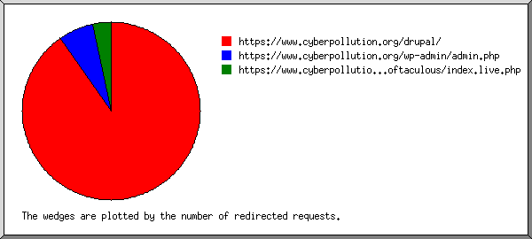
Listing referring URLs, sorted by the number of redirected requests.
(Go To: Top | General Summary | Monthly Report | Daily Summary | Hourly Summary | Domain Report | Organization Report | Redirected Referrer Report | Failed Referrer Report | Referring Site Report | Browser Report | Browser Summary | Operating System Report | Status Code Report | File Size Report | File Type Report | Directory Report | Request Report)
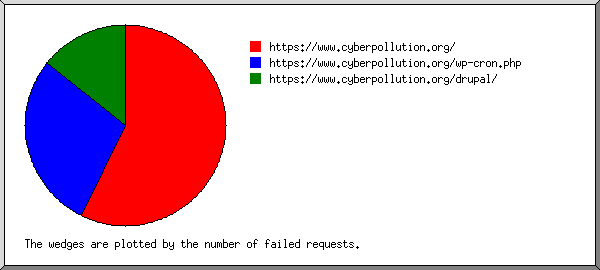
Listing referring URLs, sorted by the number of failed requests.
| #reqs | URL |
|---|---|
| 4 | https://www.cyberpollution.org/ |
| 2 | https://www.cyberpollution.org/wp-cron.php |
| 1 | https://www.cyberpollution.org/drupal/ |
(Go To: Top | General Summary | Monthly Report | Daily Summary | Hourly Summary | Domain Report | Organization Report | Redirected Referrer Report | Failed Referrer Report | Referring Site Report | Browser Report | Browser Summary | Operating System Report | Status Code Report | File Size Report | File Type Report | Directory Report | Request Report)
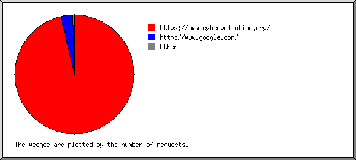
Listing referring sites, sorted by the number of requests.
| #reqs | site |
|---|---|
| 1748 | https://www.cyberpollution.org/ |
| 61 | http://www.google.com/ |
| 4 | http://www.cyberpollution.org/ |
| 1 | https://www.cyberpollution.org:2083/ |
| 1 | https://www.theguardian.com/ |
(Go To: Top | General Summary | Monthly Report | Daily Summary | Hourly Summary | Domain Report | Organization Report | Redirected Referrer Report | Failed Referrer Report | Referring Site Report | Browser Report | Browser Summary | Operating System Report | Status Code Report | File Size Report | File Type Report | Directory Report | Request Report)
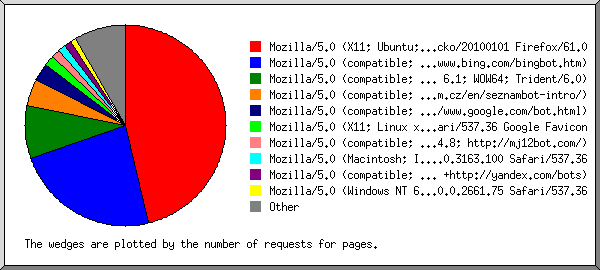
Listing browsers with at least 1 request for a page, sorted by the number of requests for pages.
| #reqs | #pages | browser |
|---|---|---|
| 991 | 135 | Mozilla/5.0 (X11; Ubuntu; Linux i686; rv:61.0) Gecko/20100101 Firefox/61.0 |
| 194 | 68 | Mozilla/5.0 (compatible; bingbot/2.0; +http://www.bing.com/bingbot.htm) |
| 61 | 25 | Mozilla/5.0 (compatible; MSIE 9.0; Windows NT 6.1; WOW64; Trident/6.0) |
| 23 | 13 | Mozilla/5.0 (compatible; SeznamBot/3.2; +http://napoveda.seznam.cz/en/seznambot-intro/) |
| 26 | 8 | Mozilla/5.0 (compatible; Googlebot/2.1; +http://www.google.com/bot.html) |
| 23 | 5 | Mozilla/5.0 (X11; Linux x86_64) AppleWebKit/537.36 (KHTML, like Gecko) Chrome/49.0.2623.75 Safari/537.36 Google Favicon |
| 8 | 4 | Mozilla/5.0 (compatible; MJ12bot/v1.4.8; http://mj12bot.com/) |
| 4 | 4 | Mozilla/5.0 (Macintosh; Intel Mac OS X 10_12_6) AppleWebKit/537.36 (KHTML, like Gecko) Chrome/61.0.3163.100 Safari/537.36 |
| 18 | 3 | Mozilla/5.0 (compatible; YandexBot/3.0; +http://yandex.com/bots) |
| 3 | 3 | Mozilla/5.0 (Windows NT 6.1; WOW64) AppleWebKit/537.36 (KHTML, like Gecko) Chrome/50.0.2661.75 Safari/537.36 |
| 3 | 3 | Sogou web spider/4.0(+http://www.sogou.com/docs/help/webmasters.htm#07) |
| 3 | 3 | Mozilla/5.1 (Windows NT 6.0; WOW64) AppleWebKit/533.36 (KHTML, like Gecko) Chrome/46.0.2754.75 Safari/533.36 |
| 50 | 3 | Mozilla/5.0 (Linux; Android 6.0.1; Nexus 5X Build/MMB29P) AppleWebKit/537.36 (KHTML, like Gecko) Chrome/41.0.2272.96 Mobile Safari/537.36 (compatible; Googlebot/2.1; +http://www.google.com/bot.html) |
| 2 | 2 | Mozilla/5.0 (compatible; Baiduspider/2.0; +http://www.baidu.com/search/spider.html) |
| 2 | 2 | Softaculous |
| 64 | 1 | Mozilla/5.0 (Windows NT 10.0; Win64; x64) AppleWebKit/537.36 (KHTML, like Gecko) Chrome/63.0.3239.132 Safari/537.36 |
| 1 | 1 | Mozilla/5.0 zgrab/0.x (compatible; Researchscan/t13rl; +http://researchscan.comsys.rwth-aachen.de) |
| 1 | 1 | Mozilla/5.0 (compatible; MSIE 10.0; Windows NT 6.1; Trident/5.0) |
| 57 | 1 | Mozilla/5.0 (X11; Ubuntu; Linux x86_64; rv:50.0) Gecko/20100101 Firefox/50.0 |
| 1 | 1 | Mozilla/5.0 (Windows NT 6.1; Win64; x64) AppleWebKit/537.36 (KHTML, like Gecko) Chrome/62.0.3202.94 Safari/537.36 |
| 2 | 1 | Mozilla/5.0 (Macintosh; Intel Mac OS X 10_12_1) AppleWebKit/537.36 (KHTML, like Gecko) Chrome/58.0.3029.110 Safari/537.36 |
| 14 | 1 | SiteLockSpider [en] (WinNT; I ;Nav) |
| 1 | 1 | Drupal (+http://drupal.org/) |
| 9 | 1 | Mozilla/5.0 (Windows NT 10.0; Win64; x64; rv:50.0) Gecko/20100101 Firefox/50.0 |
| 1 | 1 | Mozilla/5.0 (Windows NT 10.0; WOW64) AppleWebKit/537.36 (KHTML, like Gecko) Chrome/50.0.2661.102 Safari/537.36 |
| 1 | 1 | Mozilla/5.0 zgrab/0.x (compatible; Researchscan/t12ca; +http://researchscan.comsys.rwth-aachen.de) |
| 1228 | 0 | [not listed: 11 browsers] |
(Go To: Top | General Summary | Monthly Report | Daily Summary | Hourly Summary | Domain Report | Organization Report | Redirected Referrer Report | Failed Referrer Report | Referring Site Report | Browser Report | Browser Summary | Operating System Report | Status Code Report | File Size Report | File Type Report | Directory Report | Request Report)
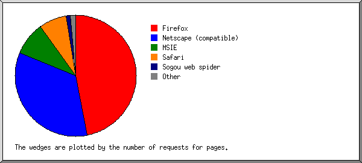
Listing browsers with at least 1 request for a page, sorted by the number of requests for pages.
| # | #reqs | #pages | browser |
|---|---|---|---|
| 1 | 2021 | 137 | Firefox |
| 991 | 135 | Firefox/61 | |
| 66 | 2 | Firefox/50 | |
| 2 | 273 | 100 | Netscape (compatible) |
| 3 | 62 | 26 | MSIE |
| 61 | 25 | MSIE/9 | |
| 1 | 1 | MSIE/10 | |
| 4 | 247 | 22 | Safari |
| 244 | 19 | Safari/537 | |
| 3 | 3 | Safari/533 | |
| 5 | 3 | 3 | Sogou web spider |
| 3 | 3 | Sogou web spider/4 | |
| 6 | 2 | 2 | Softaculous |
| 7 | 14 | 1 | SiteLockSpider [en] (WinNT; I ;Nav) |
| 8 | 1 | 1 | Drupal (+http: |
| 1 | 1 | Drupal (+http://drupal | |
| 168 | 0 | [not listed: 3 browsers] |
(Go To: Top | General Summary | Monthly Report | Daily Summary | Hourly Summary | Domain Report | Organization Report | Redirected Referrer Report | Failed Referrer Report | Referring Site Report | Browser Report | Browser Summary | Operating System Report | Status Code Report | File Size Report | File Type Report | Directory Report | Request Report)
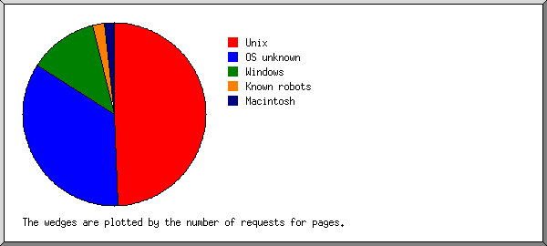
Listing operating systems, sorted by the number of requests for pages.
| # | #reqs | #pages | OS |
|---|---|---|---|
| 1 | 1121 | 144 | Unix |
| 1121 | 144 | Linux | |
| 2 | 520 | 101 | OS unknown |
| 3 | 1116 | 36 | Windows |
| 1038 | 33 | Unknown Windows | |
| 76 | 3 | Windows NT | |
| 2 | 0 | Windows XP | |
| 4 | 28 | 6 | Known robots |
| 5 | 6 | 5 | Macintosh |
(Go To: Top | General Summary | Monthly Report | Daily Summary | Hourly Summary | Domain Report | Organization Report | Redirected Referrer Report | Failed Referrer Report | Referring Site Report | Browser Report | Browser Summary | Operating System Report | Status Code Report | File Size Report | File Type Report | Directory Report | Request Report)
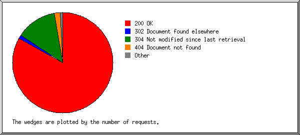
Listing status codes, sorted numerically.
| #reqs | status code |
|---|---|
| 2415 | 200 OK |
| 18 | 301 Document moved permanently |
| 31 | 302 Document found elsewhere |
| 382 | 304 Not modified since last retrieval |
| 56 | 404 Document not found |
| 2 | 500 Internal server error |
| 2 | 504 Gateway timeout |
(Go To: Top | General Summary | Monthly Report | Daily Summary | Hourly Summary | Domain Report | Organization Report | Redirected Referrer Report | Failed Referrer Report | Referring Site Report | Browser Report | Browser Summary | Operating System Report | Status Code Report | File Size Report | File Type Report | Directory Report | Request Report)
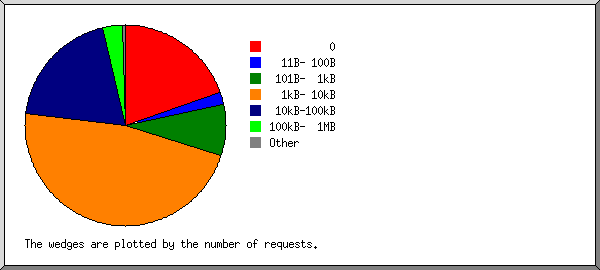
| size | #reqs | %bytes |
|---|---|---|
| 0 | 554 | |
| 1B- 10B | 8 | |
| 11B- 100B | 55 | 0.01% |
| 101B- 1kB | 226 | 0.23% |
| 1kB- 10kB | 1316 | 8.65% |
| 10kB-100kB | 543 | 42.23% |
| 100kB- 1MB | 94 | 45.80% |
| 1MB- 10MB | 1 | 3.08% |
(Go To: Top | General Summary | Monthly Report | Daily Summary | Hourly Summary | Domain Report | Organization Report | Redirected Referrer Report | Failed Referrer Report | Referring Site Report | Browser Report | Browser Summary | Operating System Report | Status Code Report | File Size Report | File Type Report | Directory Report | Request Report)
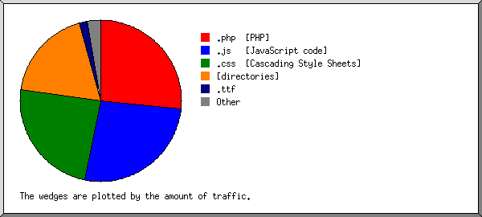
Listing extensions with at least 0.1% of the traffic, sorted by the amount of traffic.
| #reqs | %bytes | extension |
|---|---|---|
| 1270 | 26.67% | .php [PHP] |
| 485 | 26.41% | .js [JavaScript code] |
| 422 | 24.07% | .css [Cascading Style Sheets] |
| 297 | 18.53% | [directories] |
| 5 | 1.64% | .ttf |
| 169 | 0.76% | .png [PNG graphics] |
| 5 | 0.54% | .jpg [JPEG graphics] |
| 45 | 0.45% | .txt [Plain text] |
| 10 | 0.28% | .jpeg [JPEG graphics] |
| 1 | 0.15% | .woff2 |
| 17 | 0.15% | .svg |
| 22 | 0.12% | .xml |
| 49 | 0.23% | [not listed: 6 extensions] |
(Go To: Top | General Summary | Monthly Report | Daily Summary | Hourly Summary | Domain Report | Organization Report | Redirected Referrer Report | Failed Referrer Report | Referring Site Report | Browser Report | Browser Summary | Operating System Report | Status Code Report | File Size Report | File Type Report | Directory Report | Request Report)
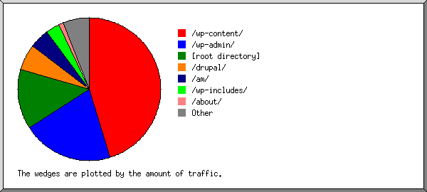
Listing directories with at least 0.01% of the traffic, sorted by the amount of traffic.
| #reqs | %bytes | directory |
|---|---|---|
| 534 | 45.15% | /wp-content/ |
| 86 | 20.62% | /wp-admin/ |
| 1306 | 13.73% | [root directory] |
| 618 | 5.93% | /drupal/ |
| 33 | 4.46% | /am/ |
| 105 | 3.08% | /wp-includes/ |
| 15 | 1.06% | /about/ |
| 9 | 0.61% | /donations/ |
| 7 | 0.47% | /fw-event-slug/ |
| 5 | 0.42% | /events/ |
| 3 | 0.42% | /pricing/ |
| 4 | 0.32% | /contact/ |
| 5 | 0.32% | /category/ |
| 3 | 0.30% | /project/ |
| 4 | 0.27% | /get-involved/ |
| 15 | 0.26% | /wp-json/ |
| 3 | 0.21% | /placed-an-order-2/ |
| 2 | 0.21% | /projects/ |
| 3 | 0.18% | /digital-forensic/ |
| 3 | 0.18% | /cyber-security/ |
| 3 | 0.18% | /website-hacked/ |
| 3 | 0.18% | /donation-confirmation/ |
| 3 | 0.18% | /man-in-the-middle-attacks/ |
| 3 | 0.18% | /cross-site-scripting-xss/ |
| 3 | 0.18% | /sql-injection-attack/ |
| 3 | 0.18% | /emergency/ |
| 2 | 0.12% | /our-vission/ |
| 2 | 0.12% | /donation-history/ |
| 2 | 0.12% | /event-response/ |
| 2 | 0.12% | /malware-remove/ |
| 2 | 0.12% | /image-gallery/ |
| 1 | 0.06% | /about-us/ |
| 1 | 0.06% | /pricing-2/ |
| 4 | 0.01% | [not listed: 2 directories] |
(Go To: Top | General Summary | Monthly Report | Daily Summary | Hourly Summary | Domain Report | Organization Report | Redirected Referrer Report | Failed Referrer Report | Referring Site Report | Browser Report | Browser Summary | Operating System Report | Status Code Report | File Size Report | File Type Report | Directory Report | Request Report)
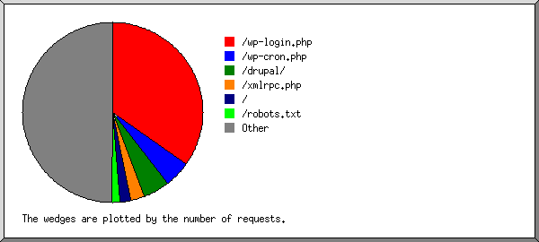
Listing files with at least 20 requests, sorted by the number of requests.
| #reqs | %bytes | last time | file |
|---|---|---|---|
| 971 | 5.64% | Aug/ 3/18 9:47 PM | /wp-login.php |
| 135 | Aug/ 3/18 9:20 PM | /wp-cron.php | |
| 130 | 3.24% | Jul/30/18 3:36 PM | /drupal/ |
| 29 | 0.75% | Jul/30/18 3:36 PM | /drupal/?q=admin/appearance&render=overlay |
| 26 | 0.47% | Jul/30/18 3:32 PM | /drupal/?q=admin/appearance/install&render=overlay |
| 70 | 1.27% | Jul/31/18 11:41 PM | /xmlrpc.php |
| 53 | 6.73% | Aug/ 3/18 3:03 PM | / |
| 41 | 0.01% | Aug/ 3/18 1:21 PM | /robots.txt |
| 23 | Aug/ 3/18 12:15 PM | /favicon.ico | |
| 1374 | 83.11% | Aug/ 3/18 3:03 PM | [not listed: 369 files] |